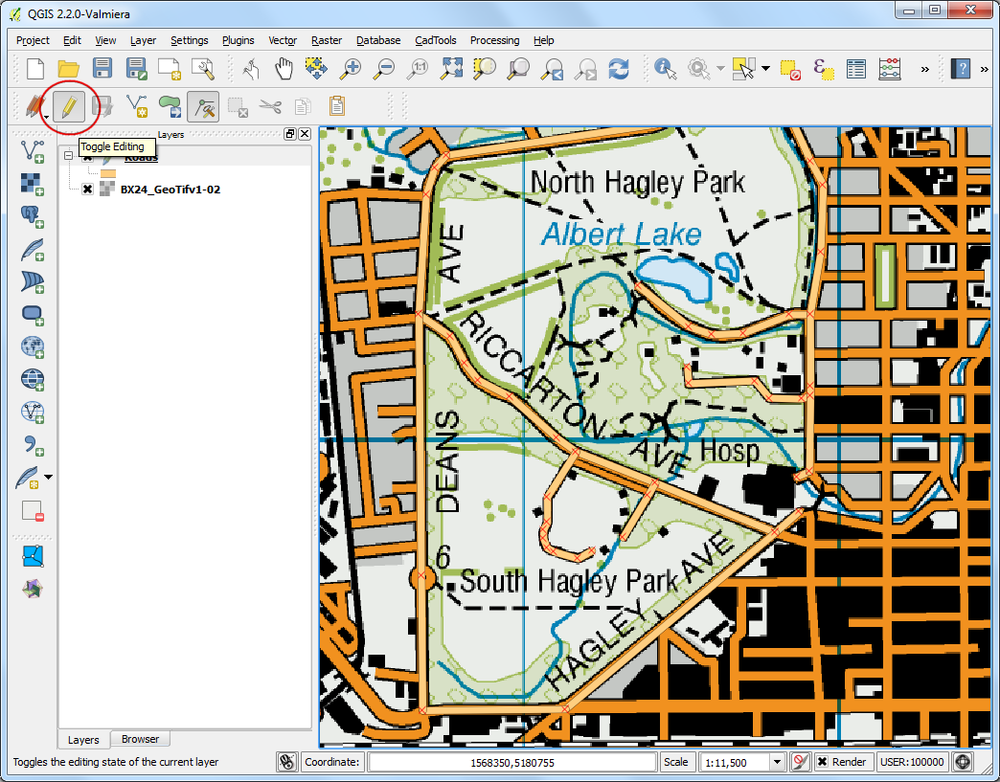
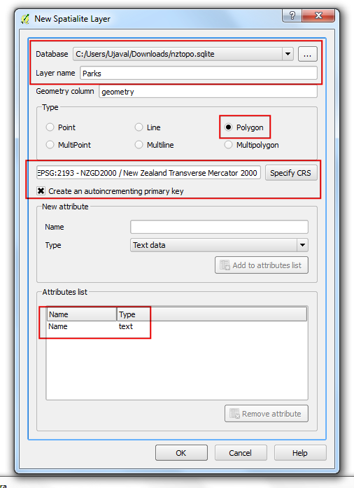

Digitizing Map Data
[ Download PDF A4 Letter ]
Digitizing is one of the most common tasks that a GIS Specialist has to do.
Often a large amount of GIS time is spent in digitizing raster data to create
vector layers that you use in your analysis. QGIS has powerful on-screen
digitizing and editing capabilities that we will explore in this tutorial.
Overview of the task
We will use a raster topographic map and create several vector layers
representing features around a park.
Other skills you will learn
- Building pyramids for large raster datasets to speed up zoom and pan
operations.
- Working with a Spatialite database.
Procedure
- Go to . Locate the downloaded
BX24_GeoTifv1-02.tif and click Open.

- This is a large raster file and you may notice that when you zoom or pan
around the map, the map takes a little time to render the image. QGIS offers
a simple solution to make rasters load much faster by using Image
Pyramids. QGIS creates pre-rendered tiles at different resolutions and
these are presented to you instead of the full raster. This makes map
navigation snappy and responsive. Right-click the BX24_GeoTifv1-02 layer
and choose Properties.

- Choose the Pyramids tab. Hold the Ctrl key and select all
the resolutios offered in the Resolutions panel. Leave other
options to defaults and click Build pyramids. Once the process
finishes, click OK.

- Back in the main QGIS window, use the Zoom tool to locate
Hagley Park area in Christchurch. This is the park that we will be
digitizing.

- Before we start, we need to set default Digitizing Options. Go to
.

- Select the Digitizing tab in the Options dialog.
Set the Default snap mode to To vertex and segment.
This will allow you to snap to the nearest vertex or line segment. I also
prefer to set the Default snapping tolerance and
Search radius for vertex edits in pixels instead of map units.
This will ensure that the snapping distance remains constant regardless of
zoom level. Depending on your computer screen resolution, you
may choose an appropriate value. Click OK.

- Now we are ready to start digitizing. We will first create a roads layer and
digitize the roads around the park area. Select . You may also choose to create a New
Shapefile Layer... instead if you prefer. Spatialite is an open database
format similar to ESRI’s geodatabase format. Spatialite database is
contained within a single file on your hard drive and can contain diferent
types of spatial (point, line, polygon) as well as non-spatial layers. This
makes is much easier to move it around instead of a bunch of shapefiles. In
this tutorial, we are creating a couple of polygon layers and a line layer,
so a Spatialite database will be better suited. You can always load a
spatialite layer and save it as a shapefile or any other format you want.

- In the New Spatialite Layer dialog, click the ...
button and save a new spatialite database named nztopo.sqlite. Choose
the Layer name as Roads and select Line as the
Type. The base topographic map is in the
EPSG:2193 - NZGD 2000 CRS, so we can select
the same for our roads layer. Check the Create an
autoincrementing primary key box. This will create a field called pkuid
in the attribute table and assign a unique numeric id automatically to each
feature. When creating a GIS layer, you must decide on the attributes that
each feature will have. Since this is a roads layer, we will have 2 basic
attributes - Name and Class. Enter Name as the Name
of the attribute in the New attribute section and click
Add to attribute list.

- Similarly create a new attribute Class of the type Text data.
Click OK.

- Once the layer is loaded, click the Toggle Editing button to
put the layer in editing mode.

- Click the Add feature button. Click on the map canvas to add a
new vertex. Add new vertices along the road feature. Once you have digitized
a road segment, right-click to end the feature.
Bemerkung
You can use the scroll wheel of the mouse to zoom in or out while digitizing.
You can also hold the scroll button and move the mouse to pan around.

- After you right-click to end the feature, you will get a pop-up dialog
called Attributes. Here you can enter attributes of the newly
created feature. Since the pkuid is an auto-incrementing field, you
will not be able to enter a value manually. Leave it blank and enter the
road name as it appears on the topo map. Optionally, assign a Road Class
value as well. Click OK.

- The default style of the new line layer is a thin line. Let’s change it so
we can better see the digitized features on the canvas. Right click the
Roads layer and select Properties.

- Select the Style tab in the Layer Properties
dialog. Choose a thicker line style such as Primary from the
predefined styles. Click OK.

- Now you will see the digitized road feature clearly. Click Save
Layer Edits to commit the new feature to disk.

- Before we digitize remaining roads, it is important to update some other
settings that are important to create an error free layer. Go to
.

- In the Snapping Options dialog, check the Enable
topological editing. This option will ensure that the common boundaries
are maintained correctly in polygon layers. Also check the
Enable snapping on intersection which allows you to snap on an
intersection of a background layer.

- Now you can click Add feature button and digitize other roads
around the park. Make sure to click Save Edits after you add a
new feaure to save your work. A useful tool to help you with digitizing is
the Node Tool. Click the Node Tool button.

- Once the node tool is activated, click on any feature to show the vertices.
Click on any vertex to select it. The vertex will change the color once it
is selected. Now you can click and drag your mouse to move the vertex. This
is useful when you want to make adjustments after the feature is created.
You can also delete a selected vertex by clicking the Delete key.
(Option+Delete on a mac)

- Once you have finished digitizing all the roads, click the
Toggle Editing button.

- Now we will create a polygon layer representing the park boundaries. Go to
. Select the
nztopo.sqlite database from the dropdown list. Name the new layer as
Parks. Select Polygon as the Type. Create a new
attribute called Name. Click OK.

- Click the Add feature button and click on the map canvas to add
a polygon vertex. Digitize the polygon representing the park. Make sure you
snap to the roads vertices so there are no gaps between the park polygons
and road lines. Right-click to finish the polygon.

- Enter the park name in the Attributes pop-up.

- Polygon layers offer another very useful setting called Avoid
intersections of new polygons. Go to . Check the box in the Avoid Int column in
the row for the Parks layer. Click OK.

- Now click on Add feature to add a polygon. With the Avoid
intersections of new polygons, you will be able quickly digitize a new
polygon without worrying about snapping exactly to the neighboring polygons.

- Right-click to finish the polygon and enter the attributes. Magically the
new polygon is shrunk and snapped exactly to the boundary of the neighboring
polygons! This is very useful when digitizing complex boundaries where you
need not be very precise and still have topologically correct polygon.
Click Toggle Editing to finish editing the Parks layer.

- Now it is time to digitize a buildings layer. Create a new polygon layer named
Buildings by going to .

- Once the Buildings layer is added, turn off the Parks and Roads
layer so the base topo map is visible. Select the Buildings layer and
click Toggle Editing.
- Digitizing buildings can be a cumbersome task. Also it is difficult to add
vertices manually so that the edges are perpendicular and form a rectangle.
We will use a plugin called Rectangles Ovals Digitizing to help with
this task. See Verwenden von Erweiterungen to see how to search and install
plugins. Once the Rectangles Ovals Digitizing plugin is installed, you
will see a new toolbar appear above the canvas.

- Zoom to an area with the buildings and click Rectangle by
Extent button. Click and drag the mouse to draw a perfect rectangle.
Similarly, add remaining buildings.

- You will notice that some buildings are not vertical. We will need to draw
a rectangle at an angle to match the building footprint. Click the
Rectangle from center.

- Click at the center of the building and drag the mouse to draw a vertical
rectangle.

- We need to rotate this rectangle to match the image on the topo map. The
rotate tool is available in the Advanced Digitizing toolbar.
Right-click on an empty area on the toolbar section and enable the
Advanced Digitizing toolbar.

- Click the Rotate Feature(s) button.

- Use the Select Single feature tool to select the polygon that
you want to rotate. Once the Rotate Feature(s) tool is
activated, you will see crosshairs at the center of the polygon. Click
exactly on that crosshairs and drag the mouse while holding the left-click
button. A preview of the rotated feature will appear. Let go of the mouse
button when the polygon aligns with the building footprint.

- Save the layer edits and click Toggle Editing once you finish
digitizing all buildings. You can drag the layers to change their order of
appearance.

- The digitizing task is now complete. You can play with the styling and
labelling options in layer properties to create a nice looking map from the
data you created.